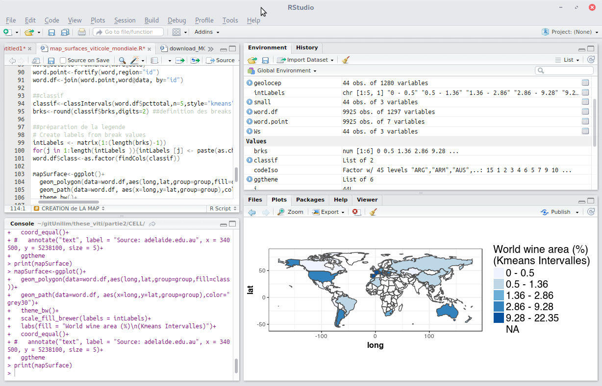

R¶
Statisztikai programozás¶
Az R egy hatékony, széles körben használt szoftver környezet statisztikai számítások és grafika számára, amely kiemelkedő a földrajzi adatok elemzésében és feldolgozásában. Az R-n belüli térinformatikai elemzési képességeket R csomagokban (modulok, amelyek kiterjesztik az R képességeit) találhatjuk meg, melyek nagy számú hagyományos és legkorszerűbb algoritmus hozzáférését biztosítja. Az R és csomagjai képesek pont, vonal, felület, hálózat, rács (stb.) adatok feldolgozására.
A felhasználók a feladatok széles körét érhetik el, mint például: képosztályozás, statisztikai elemzés a térbeli kapcsolatok és az elem mintázatok kimutatására, valamint továbbiak az alább felsorolt alapfunkciókban. Az R által kínált funkciók kiegészítik és kibővítik a GIS és képfeldolgozó szoftverek képességeit. A párhuzamos programfutásra szolgáló csomagok alkalmazásával a felhasználók drasztikusan csökkenthetik a számítási időt és növelhetik a kapacitást. Számos csomag biztosítja a kapcsolatot más OSGeo eszközökkel és szoftverekkel. Könnyedén csatlakoztathatja az R-t a GRASS-GIS, a Qgis, a postgreSQL és a postGIS programokhoz.
The core R interface is a command line window which provides excellent flexibility and control but tends to lengthen the time required to become a proficient user when compared to software with a graphical user interface (GUI). Fortunately R is well documented on the web site which eases the learning process. Scripts are often used to automate processing steps but there are GUIs, the leading one being RStudio (https://www.rstudio.com).
Az R az S programnyelv egy implementációja, jelentős kompatibilitás van az R és az előd S és S-Plus kódok és a modern S kereskedelmi verziója között, TIBCO Spotfire S+. Ez lehetővé teszi, hogy az S kód fusson az R-ben nagyobb kód módosítások nélkül.
{kind=link}
Alapfunkciók¶
Komplett objektum orientált programnyelv, melyet statisztikához és hasonló intenzíven matematikát használó alkalmazásokhoz terveztek
Aktuálisan (2017/08/11), a CRAN csomag tárházban 11239 csomag érhetőel.
A közösség által hozzáadott csomagok százai térbeli statisztikákhoz
Osztályok a térbeli adatokhoz
Téradatok olvasása és írása
Pont minta elemzések
Geostatisztika
Térbeli regresszió
Ekológiai elemzések
Hatékony raszter feldolgozó algoritmusok
Távérzékelés
Bayesian térbeli elemzés
…
Részletek¶
Honlap: https://cran.r-project.org
Licenc: GPL
Szoftver verzió: 3.4.4
Támogatott platformok: Windows, Linux, Mac, Unix
Közösségi támogatás: https://cran.r-project.org/web/views/Spatial.html
CRAN csomag elérhető: https://cran.r-project.org/web/packages/available_packages_by_name.html